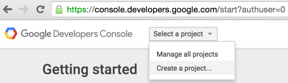
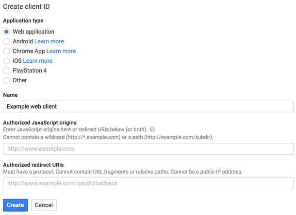
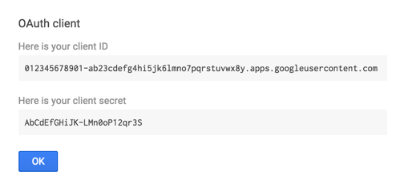
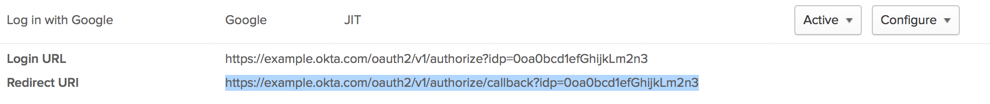
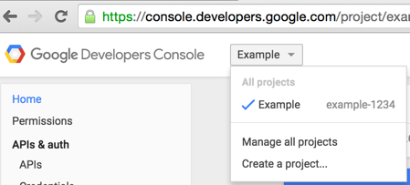

Identity Provider Set Up for Google
Note: You must have a Google account in order to set up a Google app through the Google Developers Console.
- Log into your Google account
- Go to Google Developers Console
- To create a new app, click "Select a Project" dropdown and select "Create a project".

- From the left pane, select "APIs & auth", then "Credentials".
- Click on the blue "Add credentials" drop down menu, then select "OAuth 2.0 client ID".
- Click on the blue "Configure consent screen" button to the right of the text that reads "To create an OAuth client ID, you must first set a product name on the consent screen".
- In the OAuth consent screen tab, provide an email and product name. You need to provide a product name before you can obtain the client ID/secret. Click "Save" when done.
- You will see a "Create Client ID" screen, select "Web application", name your web application, then click "Create". Note: You will be filling in "Authorized redirect URIs" after you have completed the Okta setup.

- You should now see the OAuth "Client ID" and "Client secret". Use these values to complete the Okta Google Identity Provider setup.

- Once you have saved the configuration in Okta for the Google Identity Provider, copy the Redirect URI from your newly created IDP configuration.

- Now, go back to your Google Developers Console and select your app again from the app dropdown.

-
Enter the Redirect URI you copied in step #10 under Authorized Redirect URIs.
Note: Regarding Google scopes, profile, email, and openid are automatically included by Okta.
For more information on OAuth scopes that Google uses, go to the Authorization Scopes section on their developer site.
To learn more about Google support for Social Auth - go to the OpenID Connect section on Google's developer site.